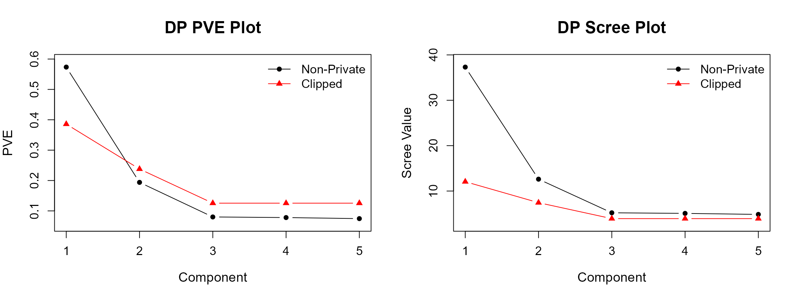
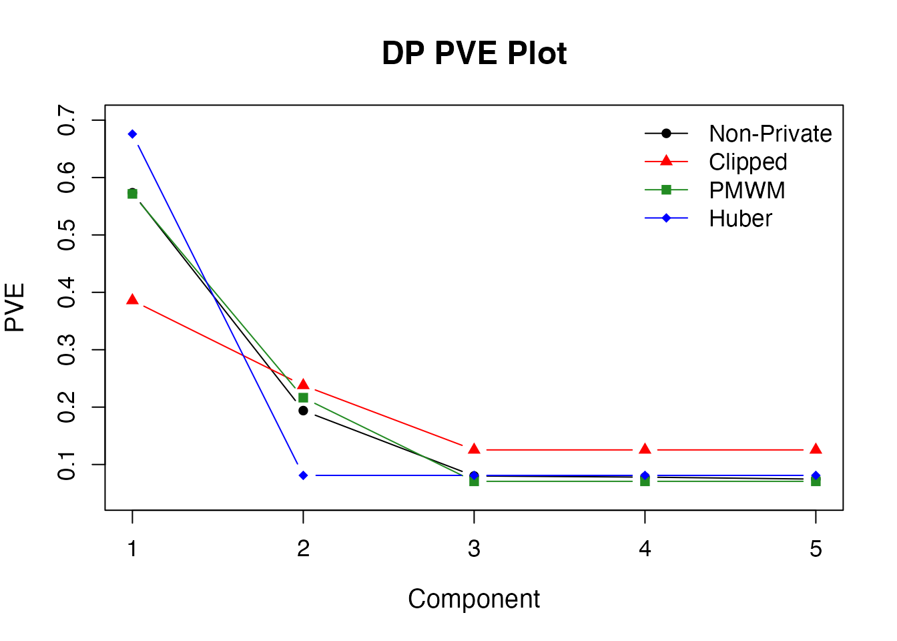
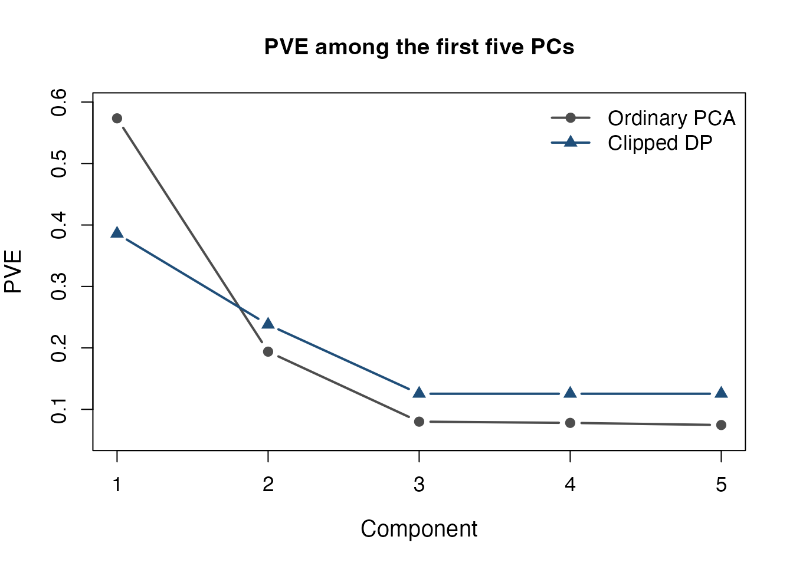

This tutorial shows how to use dp_scree() to estimate
private scree values and proportions of variance explained (PVE),
inspect the results, and draw scree and PVE plots. Also, it explains how
to choose among the clipped mean, private
modified winsorized mean (PMWM), and Huber
mean estimators.
The focus here is on R arguments, control settings, and visualization. For the paired-difference construction, mathematical formulas, and privacy accounting, see Theory of DP Scree. For installation, example datasets, input requirements, and general privacy budget allocation, see Getting Started.
1. Load the example data
We use gau, a synthetic dataset with 1,000 observations
and 20 numeric variables. For more details, see the documentation for gau.
2. Set the privacy budget and estimate scree values
Scree estimation needs a loading budget for private PC
directions and a scree budget for the private variance
estimator. When split is omitted,dp_scree()
divides the total budget equally between these two
components.
scree_privacy <- privacy_control(
eps = 6,
delta = 1e-4
)You can also specify a different allocation using split
as explained in Getting
Started.
First, we use the clipped mean method to estimate scree values for the first five PCs:
set.seed(123)
scree_fit <- dp_scree(
X,
k = 5,
privacy = scree_privacy,
method = "clipped",
control = clipped_control(C_clip = 20),
non_private = TRUE
)
scree_fit
#> Differentially Private Scree Estimates
#> Data: 1000 observations x 20 variables
#> Components: 20 PC directions; 5 scree estimates
#> Methods: scree = clipped
#> Total privacy budget: eps = 6; delta = 1e-04
#> Non-private reference: includedThe clipped_control() function requires a public
clipping threshold. The value C_clip = 20 is an
illustrative setting, not an automatic or universally recommended
choice.
The main arguments of dp_scree() are:
| Argument | Description |
|---|---|
X |
Input observations, with numeric features in columns. |
k |
Number of leading PCs to estimate, from 1 to the number of numeric variables. |
privacy |
Total budget and loading/scree allocation from
privacy_control(). |
method |
One or more of "clipped",
"pmwm", and "huber" (default:
"clipped"). |
control |
Method-specific tuning parameters, specified using
clipped_control(), pmwm_control(), or
huber_control(). |
cpp.option |
Use the compiled direction estimator
(TRUE, the default) or its R implementation
(FALSE). |
mono |
Enforce a nonincreasing scree sequence via isotonic
regression (default: TRUE). |
non_private |
Compute an ordinary PCA comparison when
TRUE (default: FALSE). |
V_dp |
Optionally reuse previously estimated private directions; their earlier loading budget must still be recorded. |
3. Inspect and plot the result
Printing scree_fit shows a short overview of the fitted
results. To see scree values, PVE, and cumulative PVE for each stored
method, use summary():
scree_summary <- summary(scree_fit)
scree_summary
#> DP Scree Estimates Summary
#> Data: 1000 observations x 20 variables
#> Components: 20 PC directions; 5 scree estimates
#> Methods: scree = clipped
#>
#> DP component importance:
#> PC1 PC2 PC3 PC4 PC5
#> Eigenvalue 12.0624 7.4371 3.9225 3.9225 3.9225
#> PVE 0.3858 0.2379 0.1255 0.1255 0.1255
#> Cumulative PVE 0.3858 0.6236 0.7491 0.8745 1.0000
#>
#> Proportions are normalized over 5 estimated components.
#>
#> Allocated privacy budget:
#> eps delta
#> Loading 3 5e-05
#> Scree 3 5e-05
#> Total 6 1e-04
#>
#> Non-private reference: includedThe numeric estimates remain directly accessible by method. The
optional ordinary PCA reference is under nonprivate, while
data dimensions, selected methods, and privacy allocations are under
metadata:
scree_fit$clipped$scree
#> PC1 PC2 PC3 PC4 PC5
#> 12.062398 7.437085 3.922463 3.922463 3.922463
scree_fit$clipped$pve
#> PC1 PC2 PC3 PC4 PC5
#> 0.3857885 0.2378583 0.1254511 0.1254511 0.1254511
scree_fit$nonprivate$scree
#> PC1 PC2 PC3 PC4 PC5
#> 37.312574 12.616374 5.206048 5.075826 4.850032
scree_fit$metadata$privacy
#> $total
#> eps delta
#> 6e+00 1e-04
#>
#> $budgets
#> $budgets$loading
#> eps delta
#> 3e+00 5e-05
#>
#> $budgets$scree
#> eps delta
#> 3e+00 5e-05
#>
#>
#> attr(,"class")
#> [1] "dppca_privacy_control"In a default private-only fit (non_private = FALSE),
scree_fit$nonprivate is NULL;
scree_fit$clipped, $pmwm, or
$huber remain top-level method results.
By default, plot() displays both the PVE and scree plots
side by side. Because this example was fitted with
non_private = TRUE, the ordinary PCA reference is included
automatically; a fit with non_private = FALSE shows only
private estimates:
plot(scree_fit)
To display only one view, use type.
| Plot type | What it shows |
|---|---|
"pve" |
Each component’s share of the estimated variation among
the k fitted PCs. |
"scree" |
Estimated variation along each private PC direction, on its original scale. |
4. Choose a method and its tuning parameters
The three scree estimators use the same projected paired differences, but differ in how they estimate their means. The tables below map the symbols used in Theory of DP Scree** to the R arguments of each method-specific control function.
Clipped mean
Clipped estimation limits each squared pair difference before releasing a noisy mean. See Theory of Clipped mean.
| Theory notation | R argument | Meaning |
|---|---|---|
C_clip |
Positive upper clipping threshold; controls the bias–noise tradeoff (required, no default). |
The setting used in Section 2 is:
clipped_set <- clipped_control(C_clip = 20)
clipped_set
#> $C_clip
#> [1] 20A smaller C_clip reduces sensitivity and Gaussian noise,
but can truncate more large paired differences. A larger value reduces
clipping bias while requiring more privacy noise.
Private modified winsorized mean (PMWM)
PMWM privately estimates lower and upper cutoffs and then computes a noisy winsorized mean. See Theory of PMWM.
| Theory notation | R argument | Meaning |
|---|---|---|
a, b
|
Public lower and upper bounds for the estimated cutoffs, with (required). | |
trim_const |
Positive baseline trimming constant in the quantile level (required). | |
eta |
Lower-bound tuning value for the trimming proportion, in (required). | |
beta |
Geometric quantile-search grid base, greater than 1
(default: 1.001). |
|
split_mode |
FALSE: reuse all pair rows in both stages
(default); TRUE: use disjoint quantile and mean
subsets. |
For example, to use PMWM instead of the clipped estimator:
pmwm_set <- pmwm_control(
a = 0,
b = 50,
trim_const = 10,
eta = 0.01
)Huber mean
The Huber method privately estimates a scale for each PC and uses thatscale to set a Huber threshold for noisy gradient descent. See Huber mean theory.
| Theory notation | R argument | Meaning |
|---|---|---|
k_min_m2, k_max_m2
|
Integer limits for the dyadic scale candidates , with (required). | |
m2_frac |
Fraction of scree epsilon used for private scale estimation, in (required). | |
mu0 |
Public initial mean iterate (default:
0). |
|
eta0 |
Positive gradient-descent step size (default:
1). |
|
T |
Number of noisy gradient steps (default:
ceiling(log(m))). |
|
M |
Number of blocks for private scale estimation (default:
floor(sqrt(m / 2)), capped by available pairs). |
When T or M is left as NULL,
the corresponding sample-size-based default is used.
For example:
huber_set <- huber_control(
k_min_m2 = -10,
k_max_m2 = 10,
m2_frac = 0.25
)5. Compare multiple methods and account for releases
To fit several methods using one private direction estimate, provide a vector of method names and a named list of their corresponding controls:
set.seed(123)
scree_comparison <- dp_scree(
X,
k = 5,
privacy = scree_privacy,
method = c("clipped", "pmwm", "huber"),
control = list(
clipped = clipped_set,
pmwm = pmwm_set,
huber = huber_set
),
non_private = TRUE
)
summary(scree_comparison)
#> DP Scree Estimates Summary
#> Data: 1000 observations x 20 variables
#> Components: 20 PC directions; 5 scree estimates
#> Methods: scree = clipped, pmwm, huber
#>
#> DP component importance (clipped):
#> PC1 PC2 PC3 PC4 PC5
#> Eigenvalue 12.0624 7.4371 3.9225 3.9225 3.9225
#> PVE 0.3858 0.2379 0.1255 0.1255 0.1255
#> Cumulative PVE 0.3858 0.6236 0.7491 0.8745 1.0000
#>
#> DP component importance (pmwm):
#> PC1 PC2 PC3 PC4 PC5
#> Eigenvalue 22.6834 8.5897 2.80526 2.80526 2.80526
#> PVE 0.5715 0.2164 0.07068 0.07068 0.07068
#> Cumulative PVE 0.5715 0.7880 0.85864 0.92932 1.00000
#>
#> DP component importance (huber):
#> PC1 PC2 PC3 PC4 PC5
#> Eigenvalue 18.5145 2.22032 2.22032 2.22032 2.22032
#> PVE 0.6758 0.08105 0.08105 0.08105 0.08105
#> Cumulative PVE 0.6758 0.75686 0.83791 0.91895 1.00000
#>
#> Proportions are normalized over 5 estimated components.
#>
#> Allocated privacy budget (per method):
#> eps delta
#> Loading 3 5e-05
#> Scree 3 5e-05
#> Total 6 1e-04
#>
#> All scree methods use the same privately estimated PC directions.
#>
#> Non-private reference: included
plot(scree_comparison, type = "pve")
Within a call, all methods share a single private direction estimate but independently compute their scree estimates using the full scree privacy budget.
6. Reusing Private PC Directions
When supplying previously estimated directions through
V_dp, specify the actual privacy budget used to estimate
those directions as the loading allocation. This records
the previously incurred privacy cost without spending the loading budget
again.
There are two ways to specify the privacy allocation.
Option 1: Specify component budgets directly.
# Estimate private PC directions.
loading_fit <- dp_loading(
X,
eps = 3,
delta = 5e-5
)
# Specify the actual loading budget and the scree budget.
reuse_privacy <- privacy_control(
loading = c(eps = 3, delta = 5e-5),
scree = c(eps = 3, delta = 5e-5)
)Option 2: Specify a total budget and allocation proportions.
reuse_privacy <- privacy_control(
eps = 6,
delta = 1e-4,
split = c(loading = 0.5, scree = 0.5)
)
# Estimate private PC directions using the allocated loading budget.
loading_budget <- reuse_privacy$components$loading
loading_fit <- dp_loading(
X,
eps = loading_budget[["eps"]],
delta = loading_budget[["delta"]]
)After either option, the estimated directions can be reused in
dp_scree():
scree_reused <- dp_scree(
X,
k = 5,
privacy = reuse_privacy,
method = "clipped",
control = clipped_control(C_clip = 20),
V_dp = loading_fit$directions,
non_private = FALSE
)
summary(scree_reused)7. Customize the plot
Use scree_plot_control() to change the appearance of the
stored plot.
plot(
scree_fit,
type = "pve",
plot_control = scree_plot_control(
title = "PVE among the first five PCs",
col = c(nonprivate = "grey30", clipped = "#1F4E79"),
legend_labels = c(nonprivate = "Ordinary PCA", clipped = "Clipped DP"),
lwd = 2,
point_cex = 1.2,
cex_main = 1.2,
legend_position = "topright"
)
)
| Setting | What it changes |
|---|---|
title, xlab,
ylab
|
Plot title and axis labels. |
col, lty,
pch
|
Named series colors, line types, and point symbols. |
lwd, point_cex
|
Line width and point-size multiplier. |
cex_main, cex_lab,
cex_axis
|
Title, axis-label, and tick-label sizes. |
legend_position,
legend_labels, cex_legend,
legend_bty
|
Legend position, labels, size, and border. |
For complete argument descriptions, see ?dp_scree,
?plot.dp_scree, and ?scree_plot_control.
Previous: DP
Loading Plot
Next: DP Score
Plot
Tutorial overview: Choose a
starting point